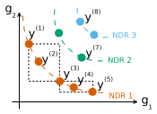
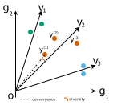

Algorithms¶
Evolutionary Algorithm (surrogate-free)¶
EA.py Script running a synchronous parallel Evolutionary Algorithm for single-objective optimization.
EA is described in: E. G. Talbi. Metaheuristics: From Design to Implementation. Wiley Series on Parallel and Distributed Computing. Wiley, 2009. ISBN: 9780470496909.
- Execution on Linux:
To run sequentially:
python ./EA.pyTo run in parallel (in 4 computational units):
mpiexec -n 4 python EA.pyTo run in parallel (in 4 computational units) specifying the units in ./hosts.txt:
mpiexec --machinefile ./host.txt -n 4 python EA.py
- Execution on Windows:
To run sequentially:
python ./EA.pyTo run in parallel (in 4 computational units):
mpiexec /np 4 python EA.py
{kind=link}
{kind=link}
Surrogate-Assisted Evolutionary Algorithm¶
SAEA.py Script running a synchronous parallel Surrogate-Assisted Evolutionary Algorithm for single-objective optimization.
The surrogate is used as an evaluator and/or a filter.
- Execution on Linux:
To run sequentially:
python ./SAEA.pyTo run in parallel (in 4 computational units):
mpiexec -n 4 python SAEA.pyTo run in parallel (in 4 computational units) specifying the units in ./hosts.txt:
mpiexec --machinefile ./host.txt -n 4 python SAEA.py
- Execution on Windows:
To run sequentially:
python ./SAEA.pyTo run in parallel (in 4 computational units):
mpiexec /np 4 python SAEA.py
{kind=link}
{kind=link}
Surrogate-Driven Algorithms¶
{kind=link}
q-EGO with Surrogate Believer¶
SDA_qEGO_SB.py Script running a synchronous parallel Surrogate-Driven Algorithm similar to q-EGO with surrogate believer for single-objective optimization.
q-EGO with Kriging Believer is described in: D. Ginsbourger, R. Le Riche, and L. Carraro. Kriging is well-suited to parallelize optimization. In Computational Intelligence in Expensive Optimization Problems. Springer, 2010, pp. 131–162.
- Execution on Linux:
To run sequentially:
python ./SDA_qEGO_SB.pyTo run in parallel (in 4 computational units):
mpiexec -n 4 python SDA_qEGO_SB.pyTo run in parallel (in 4 computational units) specifying the units in ./hosts.txt:
mpiexec --machinefile ./host.txt -n 4 python SDA_qEGO_SB.py
- Execution on Windows:
To run sequentially:
python ./SDA_qEGO_SB.pyTo run in parallel (in 4 computational units):
mpiexec /np 4 python SDA_qEGO_SB.py
{kind=link}
q-EGO with Constant Liar¶
SDA_qEGO_CL.py Script running a synchronous parallel Surrogate-Driven Algorithm similar to q-EGO with constant liar for single-objective optimization.
q-EGO with Constant Liar is described in: D. Ginsbourger, R. Le Riche, and L. Carraro. Kriging is well-suited to parallelize optimization. In Computational Intelligence in Expensive Optimization Problems. Springer, 2010, pp. 131–162.
- Execution on Linux:
To run sequentially:
python ./SDA_qEGO_CL.pyTo run in parallel (in 4 computational units):
mpiexec -n 4 python SDA_qEGO_CL.pyTo run in parallel (in 4 computational units) specifying the units in ./hosts.txt:
mpiexec --machinefile ./host.txt -n 4 python SDA_qEGO_CL.py
- Execution on Windows:
To run sequentially:
python ./SDA_qEGO_CL.pyTo run in parallel (in 4 computational units):
mpiexec /np 4 python SDA_qEGO_CL.py
{kind=link}
q-Pareto¶
SDA_qPareto.py Script running a synchronous parallel Surrogate-Driven Algorithm based on a Pareto acquisition process for single-objective optimization.
The Pareto acquisition process is described in: Z. Feng, Q. Zhang, Q. Zhang, Q. Tang, T. Yang and Y. Ma. A multi-objective optimization based framework to balance the global exploration and local exploitation in expensive optimization. In Journal of Global Optimization 61.4 (Apr. 2015), pp. 677–694.
- Execution on Linux:
To run sequentially:
python ./SDA_qPareto.pyTo run in parallel (in 4 computational units):
mpiexec -n 4 python SDA_qPareto.pyTo run in parallel (in 4 computational units) specifying the units in ./hosts.txt:
mpiexec --machinefile ./host.txt -n 4 python SDA_qPareto.py
- Execution on Windows:
To run sequentially:
python ./SDA_qPareto.pyTo run in parallel (in 4 computational units):
mpiexec /np 4 python SDA_qPareto.py
{kind=link}
q-PostHMC¶
SDA_qPostHMC.py Script running a synchronous parallel Surrogate-Driven Algorithm based on a sub-GPs acquisition process for single-objective optimization.
The sub-GPs acquisition process is described in: G. Briffoteaux. Parallel surrogate-based algorithms for solving expensive optimization problems. Thesis. University of Mons (Belgium) and University of Lille (France). 2022.
This algorithm is only meant to be run in parallel.
- Execution on Linux:
To run in parallel (in 2 computational units):
mpiexec -n 2 python SDA_qPostHMC.pyTo run in parallel (in 2 computational units) specifying the units in ./hosts.txt:
mpiexec --machinefile ./host.txt -n 2 python SDA_qPostHMC.py
- Execution on Windows:
To run in parallel (in 2 computational units):
mpiexec /np 2 python SDA_qPostHMC.py
{kind=link}
q-subnets¶
SDA_qsubnets.py Script running a synchronous parallel Surrogate-Driven Algorithm based on a sub-networks acquisition process for single-objective optimization.
The sub-networks acquisition process is described in: G. Briffoteaux. Parallel surrogate-based algorithms for solving expensive optimization problems. Thesis. University of Mons (Belgium) and University of Lille (France). 2022.
This algorithm is only meant to be run in parallel.
- Execution on Linux:
To run in parallel (in 2 computational units):
mpiexec -n 2 python SDA_qsubnets.pyTo run in parallel (in 2 computational units) specifying the units in ./hosts.txt:
mpiexec --machinefile ./host.txt -n 2 python SDA_qsubnets.py
- Execution on Windows:
To run in parallel (in 2 computational units):
mpiexec /np 2 python SDA_qsubnets.py
Hybrid Algorithms¶
Surrogate-Model-Based Optimization + Evolutionary Algorithm¶
SMBOEA.py Script running the parallel Surrogate-Model-Based Optimization + Evolutionary Algorithm for single-objective optimization.
The Surrogate-Model-Based Optimization + Evolutionary Algorithm is described in: F. Rehback, M. Zaefferer, J. Stork, and T. Bartz-Beielstein. Comparison of parallel surrogate-assisted optimization approaches. In Proceedings of the Genetic and Evolutionary Computation Conference, GECCO ’18, page 1348–1355, New York, NY, USA, 2018. Association for Computing Machinery.
This algorithm is only meant to be run in parallel in at least 3 computing units.
- Execution on Linux:
To run in parallel (in 4 computational units):
mpiexec -n 4 python SMBOEA.pyTo run in parallel (in 4 computational units) specifying the units in ./hosts.txt:
mpiexec --machinefile ./host.txt -n 4 python SMBOEA.py
- Execution on Windows:
To run in parallel (in 4 computational units):
mpiexec /np 4 python SMBOEA.py
{kind=link}
{kind=link}
Hybrid Concurrent Acquition Process¶
HCAP.py Script running the parallel Hybrid Concurrent Acquition Process for single-objective optimization.
The Hybrid Concurrent Acquition Process is described in: G. Briffoteaux, N. Melab, M. Mezmaz et D. Tuyttens. Hybrid Acquisition Processes in Surrogate-based Optimization. Application to Covid-19 Contact Reduction. International Conference on Bioinspired Optimisation Methods and Their Applications, BIOMA, 2022, Maribor, Slovenia, Lecture Notes in Computer Science, vol 13627. Springer, pages 127-141
- Execution on Linux:
To run sequentially:
python ./HCAP.pyTo run in parallel (in 4 computational units):
mpiexec -n 4 python HCAP.pyTo run in parallel (in 4 computational units) specifying the units in ./hosts.txt:
mpiexec --machinefile ./host.txt -n 4 python HCAP.py
- Execution on Windows:
To run sequentially:
python ./HCAP.pyTo run in parallel (in 4 computational units):
mpiexec /np 4 python HCAP.py
{kind=link}
{kind=link}
Hybrid Successive Acquition Process¶
HSAP.py Script running the parallel Hybrid Successive Acquition Process for single-objective optimization.
The Hybrid Successive Acquition Process is described in: G. Briffoteaux, N. Melab, M. Mezmaz et D. Tuyttens. Hybrid Acquisition Processes in Surrogate-based Optimization. Application to Covid-19 Contact Reduction. International Conference on Bioinspired Optimisation Methods and Their Applications, BIOMA, 2022, Maribor, Slovenia, Lecture Notes in Computer Science, vol 13627. Springer, pages 127-141
You must set the SIM_TIME variable to a non-zero positive value. This represents the evaluation time of the objective function (which is fictitious in case of artificial benchmark functions).
- Execution on Linux:
To run sequentially:
python ./HSAP.pyTo run in parallel (in 4 computational units):
mpiexec -n 4 python HSAP.pyTo run in parallel (in 4 computational units) specifying the units in ./hosts.txt:
mpiexec --machinefile ./host.txt -n 4 python HSAP.py
- Execution on Windows:
To run sequentially:
python ./HSAP.pyTo run in parallel (in 4 computational units):
mpiexec /np 4 python HSAP.py
{kind=link}
Multi-Objective Algorithms¶
Non-Domiated Sorted Genetic Algorithm¶
NSGA_II.py Script running the synchronous parallel surrogate-free Non-Domiated Sorted Genetic Algorithm for multi-objective optimization.
NSGA_II is described in: K. Deb, A. Pratap, S. Agarwal and T. Meyarivan. A fast and elitist multiobjective genetic algorithm: NSGA_II. IEEE Transactions on Evolutionary Computation, 6(2):182–197, 2002.
- Execution on Linux:
To run sequentially:
python ./NSGA_II.pyTo run in parallel (in 4 computational units):
mpiexec -n 4 python NSGA_II.pyTo run in parallel (in 4 computational units) specifying the units in ./hosts.txt:
mpiexec --machinefile ./host.txt -n 4 python NSGA_II.py
- Execution on Windows:
To run sequentially:
python ./NSGA_II.pyTo run in parallel (in 4 computational units):
mpiexec /np 4 python NSGA_II.py
{kind=link}
Selection step relies on Non-Dominated and Crowded-distance sorting criteria:
{kind=link}
Reference Vector Guided Evolutionary Algorithm¶
RVEA.py Script running the synchronous parallel surrogate-free Reference Vector Guided Evolutionary Algorithm for multi-objective optimization.
- Execution on Linux:
To run sequentially:
python ./RVEA.pyTo run in parallel (in 4 computational units):
mpiexec -n 4 python RVEA.pyTo run in parallel (in 4 computational units) specifying the units in ./hosts.txt:
mpiexec --machinefile ./host.txt -n 4 python RVEA.py
- Execution on Windows:
To run sequentially:
python ./RVEA.pyTo run in parallel (in 4 computational units):
mpiexec /np 4 python RVEA.py
{kind=link}
{kind=link}
Reference vectors guided-replacement based on sub-populations:
{kind=link}
RVEA*¶
RVEA_star.py Script running the synchronous parallel surrogate-free Reference Vector Guided Evolutionary Algorithm* for multi-objective optimization.
- Execution on Linux:
To run sequentially:
python ./RVEA_star.pyTo run in parallel (in 4 computational units):
mpiexec -n 4 python RVEA_star.pyTo run in parallel (in 4 computational units) specifying the units in ./hosts.txt:
mpiexec --machinefile ./host.txt -n 4 python RVEA_star.py
- Execution on Windows:
To run sequentially:
python ./RVEA_star.pyTo run in parallel (in 4 computational units):
mpiexec /np 4 python RVEA_star.py
{kind=link}
Adaptive Bayesian Multi-Objective Evolutionary Algorithm¶
AB_MOEA.py Script running the synchronous parallel surrogate-based Adaptive Bayesian Multi-Objective Evolutionary Algorithm.
AB_MOEA is described in: X. Wang, Y. Jin, S. Schmitt and M. Olhofer. An adaptive Bayesian approach to surrogate-assisted evolutionary multi-objective optimization. In Information Sciences 519 (2020), pp. 317–331. ISSN: 0020-0255.
- Execution on Linux:
To run sequentially:
python ./AB_MOEA.pyTo run in parallel (in 4 computational units):
mpiexec -n 4 python AB_MOEA.pyTo run in parallel (in 4 computational units) specifying the units in ./hosts.txt:
mpiexec --machinefile ./host.txt -n 4 python AB_MOEA.py
- Execution on Windows:
To run sequentially:
python ./AB_MOEA.pyTo run in parallel (in 4 computational units):
mpiexec /np 4 python AB_MOEA.py
{kind=link}
Surrogate-Assisted Evolutionary Algorithm for Medium Scale Expensive problems¶
SAEA_ME.py Script running the synchronous parallel Surrogate-Assisted Evolutionary Algorithm for Medium Scale Expensive multi-objective problems.
The dimensionality reduction technique proposed in the paper is not reproduced.
- Execution on Linux:
To run sequentially:
python ./SAEA_ME.pyTo run in parallel (in 4 computational units):
mpiexec -n 4 python SAEA_ME.pyTo run in parallel (in 4 computational units) specifying the units in ./hosts.txt:
mpiexec --machinefile ./host.txt -n 4 python SAEA_ME.py
- Execution on Windows:
To run sequentially:
python ./SAEA_ME.pyTo run in parallel (in 4 computational units):
mpiexec /np 4 python SAEA_ME.py
{kind=link}
{kind=link}
{kind=link}